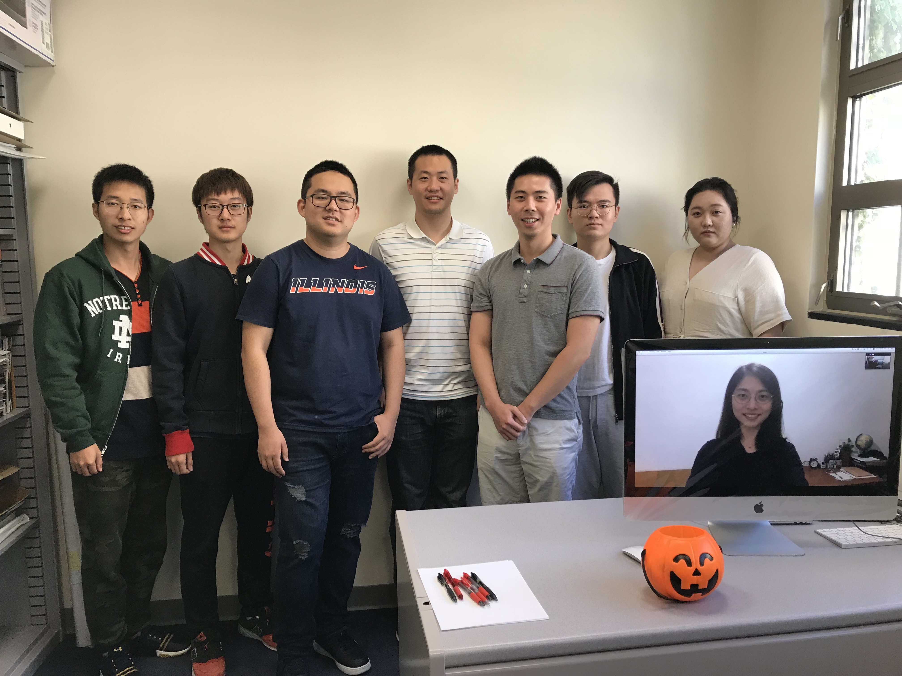
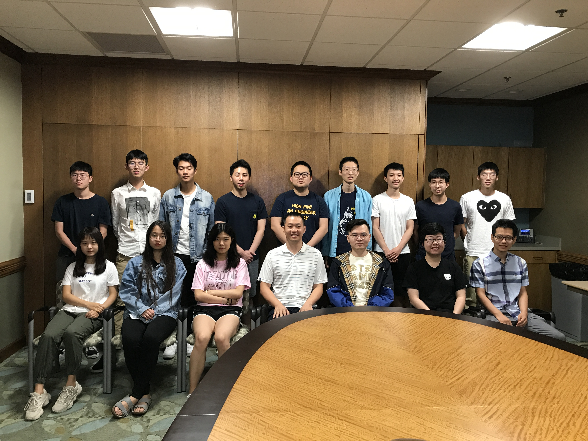
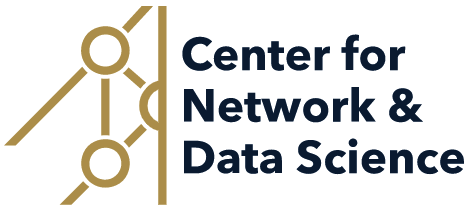

DM2 Lab: Data Mining towards Decision Making
"We develop data-driven computational methods and intelligent systems to facilitate decision making." -- dm_square
Data-driven Behavior Analytics: User modeling, Recommender system, Fraud detection; Graph machine learning, Graph anomaly detection, Dynamic graph modeling; Information extraction, Named entity recognition, Taxonomy construction, Knowledge graph construction; Natural language generation, answer retrieval, question generation, summarization.
Faculty

|
Email: mjiang2 [at] nd.edu
|

|
Check our repositories!
|
Current Graduate Students
|
Daheng Wang: PhD student (2016-)
Email: dwang8 [at] nd.edu
User modeling, Graph representation learning, Dynamic graph modeling
First authored in 3 KDD, 1 WWW, 1 KDD-DLG best paper
|
Tong Zhao: Master student (2017-2018), PhD student (2018-); Snap Fellowship
Email: tzhao2 [at] nd.edu
Fraud detection; Graph anomaly detection, Graph representation learning
First authored in 1 AAAI, 1 CIKM, 1 BigData
|
|
Qingkai Zeng: PhD student (2018-)
Email: qzeng [at] nd.edu
Information extraction, Named entity recognition, Taxonomy construction
First authored in 1 EMNLP
|
Wenhao Yu: PhD student (2019-); CSE Select Fellowship
Email: wyu1 [at] nd.edu
Natural languge generation, Question answering
First authored in 2 WWW, 1 WWW demo, 1 ACL, 1 EMNLP demo
|
|
Mengxia Yu: PhD student (2020-); CSE Select Fellowship
Email: myu2 [at] nd.edu
Natural language generation, Knowledge graph learning
|
Lingbo Tong: PhD student (2020-); Psycho-CSE Joint Program
Email: ltong2 [at] nd.edu
Information extraction, Knowledge graph construction
|
|
Gang Liu: PhD student (2021-)
Email: gliu7 [at] nd.edu
Graph representation learning
|
Zhihan Zhang: PhD student (2021-)
Email: zzhang23 [at] nd.edu
Natural language processing
|
Current Undergraduate Students
- Ann Hermann (since 05/2020): Extracting profiles and social networks from history books.
- Michael Lee (since 05/2020): Analyzing helpfulenss of responses to suicidal intention.
- Fangcong Yin (since 08/2020): Evaluating the diversity of machine-generated text.
Current Highschool Students
- Rebekah Fang and Libby Garnett (since 09/2020): Predicting the category of emotional support in responses to suicidal thoughts: Won the second place in the 2021 Northern Indiana Regional Science and Engineering Fair. Recommended to the 33rd Annual Hoosier Science and Engineering Fair (HSEF).
Past Graduate Students
|
Xueying Wang: Master's Degree (2018-2019)
Email: xwang41 [at] nd.edu
Time-aware information extraction
|
Bhakti Sharma: Master's Degree (2019-2020)
Email: bsharma2 [at] nd.edu
Natural language processing for sentiment analysis
|
|
Jianing Li: Master's Degree (2019-2020)
Email: jli23 [at] nd.edu
Deep transfer learning
|
Tianwen Jiang: Visiting PhD student (2018-2019)
Email: tjiang2 [at] nd.edu
Information extraction, Knowledge graph construction
|
|
Qi Li: PhD student (2017)
Email: qli8 [at] nd.edu
Time-aware information extraction
|
Zachary Eberhart: PhD student (2017)
Email: zeberhar [at] nd.edu
Representation learning
|
|
Haiqiao Zhang: PhD student (2018)
Email: hzhang5 [at] nd.edu
Time-aware information extraction
|
Yifan Ding: Master student (2019)
Email: yding4 [at] nd.edu
Representation learning
|
Past Undergraduate Students for Research
- Alvin Alaphat (01/2020-05/2020): Predicting outcomes of NSF projects from abstracts.
- Xiangyu Dong (09/2019-05/2020): News generation using NLP.
- Zaitang Li (09/2019-05/2020): Survey on natural language generation.
- Matthew Malir (01/2018-05/2018): Actionable fraud detection (Second author in BigData'18).
- Luke Marushack (01/2020-05/2020): Natural language generation.
- Sebastian Miner (01/2018-05/2018): Information extraction from news articles.
- Bo Ni (09/2019-02/2021): Graph learning for fraud detection (Co-first author in KDD-DLG'20).
- Matthew Schoenbauer (09/2018-05/2019): Anomaly detection in power-law distributed data.
- Chan Hee (Luke) Song (09/2019-03/2020): Question answering for named entity recognition.
- Yuhan (Tina) Wu (09/2018-05/2019): Supervised topic modeling.
- Tianze Zheng (09/2019-05/2020): Information extraction from tabular data.
Past iSure Program Undergraduate Students
- Chuchen Deng (05/2019-08/2019): Anomaly detection (Second author in KDD-DLG'20 and Second author in CIKM'20).
- Xin Liu (07/2019-08/2019): Scientific information extraction
- Yihong Ma (05/2019-08/2019): Information extraction (First author in CIKM-EYRE'19 and Third author in KDD-DLG'20).
- Wei Peng (07/2019-08/2019): Scientific information extraction.
- Yu Shu (05/2018-08/2018): Information extraction from tabular data (Third author in WWW'20).
- Kaifeng Yu (07/2019-08/2019): Anomaly detection (Third author in KDD-DLG'20 and Third author in CIKM'20).
- Mengxia Yu (07/2019-08/2019): Information extraction (Second author in EMNLP-TextGraphs'19 and Second author in WWW'20).
- Wenhao Yu (05/2018-08/2018): Information extraction (First author in WWW'19 and First author in WWW'20).
- Zhihan Zhang (07/2019-08/2019): Graph-based literature search (Co-first author in BIBM'19 and Second author in KDD-DLG'20).
- Yang Zhou (07/2019-08/2019): Information extraction from news data (First author in ACL-FEVER'20).
Past Highschool Students
- Michael Florin (09/2019-07/2020): Analyzing peer responses on Reddit to suicidal intention.
- Eric Zhang (09/2018-07/2020): Predicting user gender based on clicked news articles.
Group Photos
|  September 2018 |  July 2019 |
Selected Publications: Text Mining and Natural Language Processing
- A Technical Question Answering System with Transfer Learning by W. Yu, L. Wu, Y. Deng, R. Mahindru, Q. Zeng, S. Guven, M. Jiang. Findings of Empirical Methods on Natural Language Processing (EMNLP), 2020. (demo) [github] [video]
- Tri-Train: Automatic Pre-fine Tuning between Pre-training and Fine-tune Training for SciNER by Q. Zeng, W. Yu, M. Yu, T. Jiang, T. Weninger, M. Jiang. Findings of Empirical Methods on Natural Language Processing (EMNLP), 2020.
- Biomedical Knowledge Graphs Construction from Conditional Statements by T. Jiang, Q. Zeng, T. Zhao, B. Qin, T. Liu, N. Chawla, M. Jiang. IEEE/ACM Transactions on Computational Biology and Bioinformatics (TCBB), 2020. [DOI] [bibtex]
- Precise Temporal Slot Filling via Truth Finding with Data-Driven Commonsense by X. Wang, M. Jiang. Knowledge and Information Systems, 2020. [DOI] [bibtex]
- Phrase-level Pairwise Topic Modeling to Uncover Helpful Peer Responses to Online Suicidal Crises by M. Jiang, B.A. Ammerman, Q. Zeng, R. Jacobucci, A. Brodersen. Nature Humanities and Social Sciences Communications, 2020. [DOI] [bibtex]
- A Probabilistic Model with Commonsense Constraints for Pattern-based Temporal Fact Extraction by Y. Zhou, T. Zhao, M. Jiang. Workshop on Fact Extraction and Verification (FEVER) at Annual Meeting of the Association for Computational Linguistics (ACL), 2020.
- Crossing Variational Autoencoders for Answer Retrieval by W. Yu, L. Wu, Q. Zeng, S. Tao, Y. Deng, M. Jiang. Annual Meeting of the Association for Computational Linguistics (ACL), 2020. [DOI] [bibtex]
- Experimental Evidence Extraction in Data Science with Hybrid Table Features and Ensemble Learning by W. Yu, W. Peng, Y. Shu, Q. Zeng, M. Jiang. The Web Conference (TheWebConf), 2020. [DOI] [bibtex]
- Generating Helpful Responses for Intelligent Tech Support by W. Yu, L. Wu, S. Tao, Y. Deng, Q. Zeng, M. Jiang. Reasoning for Complex QA Workshop (RCQA) at AAAI Conference on Artificial Intelligence (AAAI), 2020.
- CTGA: Graph-based Biomedical Literature Search by T. Jiang, Z. Zhang, T. Zhao, B. Qin, T. Liu, N. Chawla, M. Jiang. IEEE International Conference on Bioinformatics and Biomedicine (BIBM), 2019. [DOI] [bibtex]
- Faceted Hierarchy: A New Graph Type to Organize Scientific Concepts and a Construction Method by Q. Zeng, M. Yu, W. Yu, J. Xiong, Y. Shi, M. Jiang. Workshop on Graph-Based Natural Language Processing (TextGraphs) at Conference on Empirical Methods in Natural Language Processing (EMNLP), 2019.
- Multi-input Multi-output Sequence Labeling for Joint Extraction of Fact and Condition Tuples from Scientific Text by T. Jiang, T. Zhao, B. Qin, T. Liu, N. Chawla, M. Jiang. Conference on Empirical Methods in Natural Language Processing (EMNLP), 2019. [DOI] [bibtex]
- The Role of 'Condition': A Novel Scientific Knowledge Graph Representation and Construction Model by T. Jiang, T. Zhao, B. Qin, T. Liu, N. Chawla, M. Jiang. ACM SIGKDD International Conference on Knowledge Discovery and Data Mining (KDD), 2019. [DOI] [bibtex]
- A Novel Unsupervised Approach for Precise Temporal Slot Filling from Incomplete and Noisy Temporal Contexts by X. Wang, H. Zhang, Q. Li, Y. Shi, M. Jiang. The Web Conference (TheWebConf), 2019. [DOI] [bibtex]
Selected Publications: Representation Learning
- Data Augmentation for Graph Neural Networks by T. Zhao, Y. Liu, L. Neves, O. Woodford, M. Jiang, N. Shah. AAAI Conference on Artificial Intelligence (AAAI), 2021.
- Learning Attribute-Structure Co-Evolutions in Dynamic Graphs by D. Wang, Z. Zhang, Y. Ma, T. Zhao, T. Jiang, N.V. Chawla, M. Jiang. International Workshop on Deep Learning on Graphs: Methods and Applications (DLG) at ACM SIGKDD International Conference on Knowledge Discovery and Data Mining (KDD), 2020. (Best Paper Award)
- Calendar Graph Neural Networks for Modeling Time Structures in Spatiotemporal User Behaviors by D. Wang, M. Jiang, M. Syed, O. Conway, V. Juneja, S. Subramanian, N. Chawla. ACM SIGKDD International Conference on Knowledge Discovery and Data Mining (KDD), 2020. [DOI]
- TUBE: Embedding Behavior Outcomes for Predicting Success by D. Wang, T. Jiang, N. Chawla, M. Jiang. ACM SIGKDD International Conference on Knowledge Discovery and Data Mining (KDD), 2019. [DOI] [bibtex]
- Multi-Type Itemset Embedding for Learning Behavior Success by D. Wang, M. Jiang, Q. Zeng, Z. Eberhart, N.V. Chawla. ACM SIGKDD International Conference on Knowledge Discovery and Data Mining (KDD), 2018. [DOI] [bibtex]
Selected Publications: Suspicious Behavior Detection
- Early Fraud Detection with Augmented Graph Learning by T. Zhao, N. Bo, W. Yu, M. Jiang. International Workshop on Deep Learning on Graphs: Methods and Applications (DLG) at ACM SIGKDD International Conference on Knowledge Discovery and Data Mining (KDD), 2020.
- GNN-based Graph Anomaly Detection with Graph Anomaly Loss by T. Zhao, C. Deng, K. Yu, T. Jiang, D. Wang, M. Jiang. International Workshop on Deep Learning on Graphs: Methods and Applications (DLG) at ACM SIGKDD International Conference on Knowledge Discovery and Data Mining (KDD), 2020.
- Error-bounded Graph Anomaly Loss for GNNs by T. Zhao, C. Deng, K. Yu, T. Jiang, D. Wang, M. Jiang. ACM International Conference on Information and Knowledge Management (CIKM), 2020. [DOI]
- Identifying Referential Intention with Heterogeneous Contexts by W. Yu, M. Yu, T. Zhao, M. Jiang. The Web Conference (TheWebConf), 2020. [DOI] [bibtex]
- Improving Situational Awareness with Collective Artificial Intelligence over Knowledge Graphs by M. Jiang. Artificial Intelligence and Machine Learning for Multi-Domain Operations Applications II in SPIE Defense + Commercial Sensing Symposium, 2020. [DOI] [bibtex]
- Actionable Objective Optimization for Suspicious Behavior Detection on Large Bipartite Graphs by T. Zhao, M. Malir, M. Jiang. IEEE International Conference on Big Data (BigData), 2018. [DOI] [bibtex]
Sponsors
Research work has been supported by National Science Foundation, Snap Research, Condé Nast Inc., and Global Gateway.
- NSF CRII: III: Complementarity Learning for Contextual Behavior Modeling. (10/01/2019 - 09/30/2021)
- NSF SHF: Medium: Collaborative Research: Semantically-Enhanced Software Traceability for Supporting Human-Centric Tasks. (08/15/2019 - 08/14/2023)
- Global Gateway: Digital Empires: Structured Biographical and Social Network Analysis of Early Chinese Empires. (05/01/2019 - 08/31/2020)
- Condé Nast: Representation Learning for Modeling and Predicting User Engagement and Propensity for Conversion Through the Engagement Funnel. (01/21/2019 - 05/20/2020)

|

|

|

|

|

|
 |